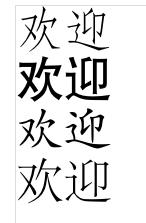
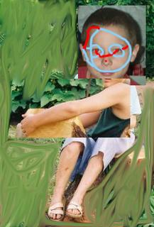
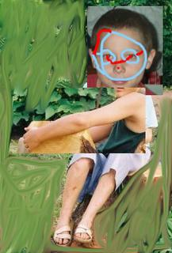

Image left - Welcome in Chinese... well, I can't read Chinese, so I'm trustig Ian that's what it says... I got it from him awhile back to add chinese to the many languages I have welcome in on my home page. I haven't got around to it yet... and I just found the picture again and went 'oh yeah!'.  Image right - NSAers will recognise it from my rez. It's a piece of 'artwork' i created eons ago by drastically distorting an already bad picture of myself. Why I still have it is beyond me... maybe I thought it was worth keeping? Who knows, I'll keep it until I decide ;P
Image left again - more of my lovely boredom in an image editor ;P again, rather old, few people have even seen this image ;P
NOTE: This post views better if you hide the sidebar.
Tags: Random
Image right - NSAers will recognise it from my rez. It's a piece of 'artwork' i created eons ago by drastically distorting an already bad picture of myself. Why I still have it is beyond me... maybe I thought it was worth keeping? Who knows, I'll keep it until I decide ;P
Image left again - more of my lovely boredom in an image editor ;P again, rather old, few people have even seen this image ;P
NOTE: This post views better if you hide the sidebar.
Tags: Random